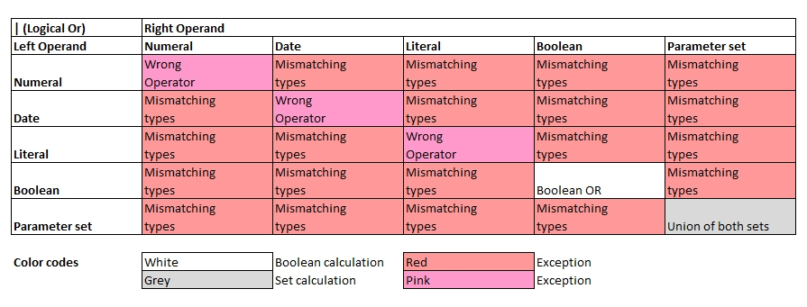

Introduction
Basic rules to logical OR (Symbol: |):
- For boolean values the logical OR operator is applied.
- For sets, the union of equal elements will be identified.
- All other data types wll be rejected

echo("On boolean values:");
a[0] = false | false;
a[1] = true | false;
a[2] = true | true;
for all variables( a[], x[] ) echo( x[] );
echo("On sets:");
b[0] = { a, b, 1 } | { 1, b, a }; // {a, b, 1}
b[1] = { a, b, 1 } | { 1, b, c }; // {a, b, 1, c}
b[2] = { a, b, b } | { b, b, c }; // {a, b, b, c}
for all variables( b[], x[] ) echo( x[] );On boolean values:
false
true
true
On sets:
{'a','b',1}
{'a','b',1,'c'}
{'a','b','b','c'}